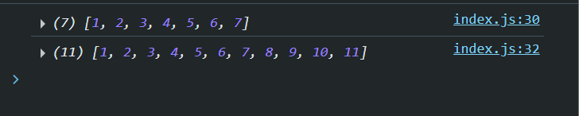
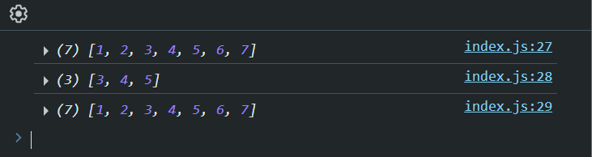

Note:
The ctrl + tab is used for navigate between the files in the VS code.
Methods:
The split() converts the string to array. It has two parameters.
Empty Parameter
It converts the entire string to a single element of array stored at index 0.
const str = "hello"
console.log(str.split())
Null String as parameter
It converts the letters of a string to element of array with begin index 0 and ending index with string leangth-1.
const str = "hello"
console.log(str.split(""))
Special Symbols within the String
It splits the string to number of elements of array where it found @.
const str2 = "hello@sudhansu@panda"
console.log(str2.split("@"))
The push() is used to add new elements into the ending index of an array.
const str = [1,2,3,4,5,6,7]
console.log(str)
str.push(8,9,10,11)
console.log(str)

The unshift() is used to add new elements into the starting index of an array.
const str = [1,2,3,4,5,6,7]
console.log(str)
str.unshift(-2,-1,1,0)
console.log(str)
The pop() is used to remove a single element from the ending index of an array.
const str = [1,2,3,4,5,6,7]
console.log(str)
str.pop()
console.log(str)
The shift() is used to remove a single element from the starting index of an array.
const str = [1,2,3,4,5,6,7]
console.log(str)
console.log(str.shift())
console.log(str)
const str = [1,2,3,4,5,6,7]
console.log(str)
console.log(str.slice(2,5))
console.log(str)

const str = [1,2,3,4,5,6,7]
console.log(str +" --> This is an array "+ typeof str)
const jn = str.join("")
console.log(jn+ " --> This is a " + typeof jn )
Output
1,2,3,4,5,6,7 --> This is an array object
1234567 --> This is a string